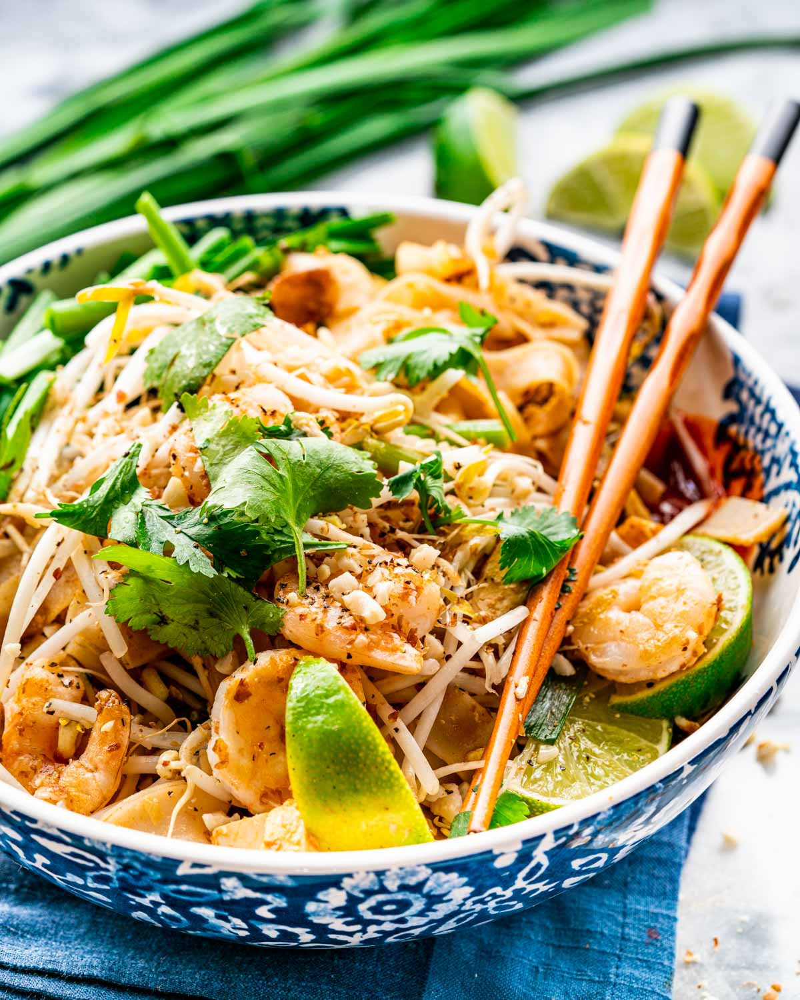

Pad Thai Recipe

Description
Pad Thai is a Thai noodle stir fry with a sweet-savoury-sour sauce scattered with crushed peanuts.
It's made with thin, flat rice noodles, and almost always has bean sprouts, garlic chives, scrambled egg,
firm tofu and a protein – the most popular being chicken or prawns/shrimp.
Ingredients
Base
- 8oz flat rice noodles
- 1/2 cup crushed peanuts
- 2 limes
- 3 tbsp fish sauce
- 3 tbsp oil
- 1 cup beansprouts
- 1 red bell pepper
- 1/2 cup cilantro
- 2 eggs
- 8oz uncooked shrimp or tofu
Sauce
- 1 tbsp soy sauce
- 5 tbsp light brown sugar
- 2 tbsp rice vinegar
- 1 tbsp sriracha hot sauce
- 2 tbsp peanut butter
Steps
- Cook noodles according to package instructions, until just tender. Rinse in cold water.
- Make sauce by combining sauce ingredients in a bowl, set aside.
- Heat 1½ tablespoons of oil in a large saucepan or wok over medium-high heat. Add the shrimp,
chicken or tofu, garlic and bell pepper. The shrimp will cook quickly, about 1-2 minutes on each side,
or until pink. If using chicken, cook until just cooked through, about 3-4 minutes, flipping only once.
- Add a little more oil, then add the eggs into the pan, breaking them into small pieces with spatula as they cook.
- Add noodles, sauce, bean sprouts, and peanuts to the pan, toss to combine.
- Garnish with green onion, peanuts, cilantro, and lime wedges. Serve immediately!
- Congrats, you now have authentic Pad Thai for dinner!